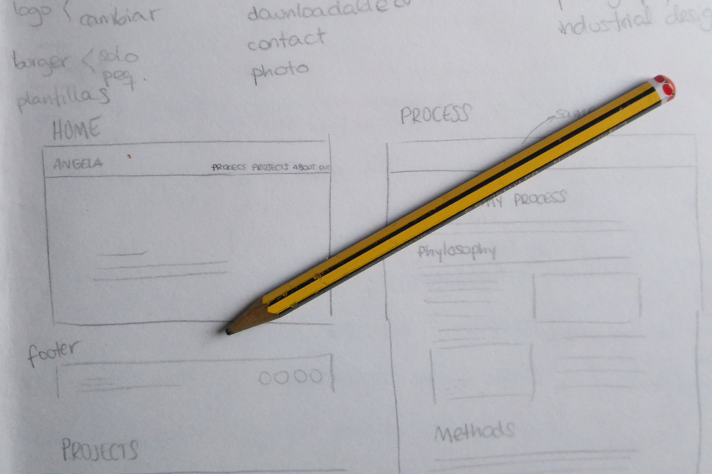
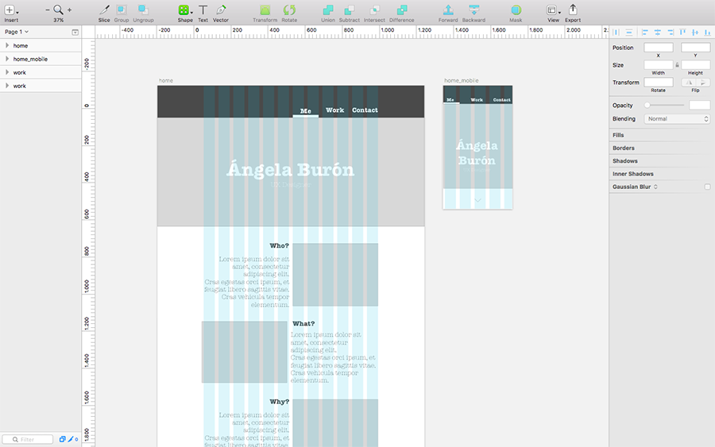

This website

Synopsis
Individual project to create this website. As part of my training as a UX/UI designer, I've learned the basic tools to build a website, right? I think it would be an enormous contradiction if I didn't follow the UX process here.
In this project I'm stakeholder, client, user, UX/UI designer and developer. Yay!
Skills
- Versatility
- User research
- Mental mapping
- Visual design
- Usability testing
- Responsive design
- HTML5 + CSS3 + jQuery
User research
Users of my portfolio
- Recruiters
- Clients
- Human Relations Managers
- Other designers
- MOM!
“In a portfolio, quality is more important than quantity”
“I like to be able to check portfolios offline when I'm on the train”
"If you are an experience designer, responsive is not an option"
“I see dozens of portfolios every day, I appreciate when the personality of the applicant comes through”
The user persona
I created a persona and a storyboard focusing on recruiters.


Problem statement
The opportunity
The large number of portfolios recruiters see makes them feel bored and overwhelmed and depend on an internet connection.
The solution
To create a downloadable portfolio that shows my personality and my values, as well as my projects, with an interface that is friendly, clean and easy to use.
Sitemap
Relevant content
- UX projects I have done
- Other projects that demonstrate useful skills
- The process I follow
- Contact page with downloadable CV
- Biography and personal information

Visual design
Brand qualities
- Informal, but not unprofessional
- Clean, but not flat
- Simple, but not boring
- Affordable, but not cheap
Mood boards


In terms of typography, I decided to use Source Sans Pro because it's free, clean and easy to use and has a wide variety of weights and symbols.
Prototype
First, I created some sketches in my notebook to start outlining my portfolio. As time was a restriction, I jumped into digital and did some prototypes for mobile and desktop.
 Clickable prototype
You are clicking already! What do you think? Get in touch if you wish, any feedback is very much appreciated!